Definitely check out their commercial!
Definitely check out their commercial!
I love interactive fashion as a concept. More specifically, I have imagined clothing wearing people and influencing the human's behavior, rather than a person wearing a garment. Likewise, if our internal physiological or psychological states were personified and announced by an article of clothing-- independent of whether the wearer wanted to proclaim their feelings or not--how would that influence our interactions, perceptions, and social conduct?
As a gift to myself for graduating college, I bought myself Emoki--a lightweight EEG headset that translated the neural signal from a single point electrode to a pair of fluffy ears. [video] My Emoki headset garnered a lot of curious attention from strangers, but I soon learned that wearing my ears in public meant I was quite explicitly wearing my emotions as well. The ear motor output was coded to resemble that of a dog, and thus the focus of my attention was transparent. It was clear to observers whether I was particularly interested, not listening, suspicious, or engaged in a flow state; the vulnerability I experienced was particularly jarring and unexpected. Here's the IndieGogo campaign video for the (now discontinued) Emoki headset:
In the many years spent neuroscience labs, I have been particularly interested in studying stress and its neuroendocrine influences on the brain and behavior. In human studies, many researchers observe changes in subjects' skin conductance (also known as Galvanic Skin Response (GSR) by measuring relative changes in sweat gland activity from two points on the hand. Increased conductance between electrodes is indicative of heighted emotional arousal or a stress response.
Students at the MIT Media lab produced a skin conductance measuring glove called the Galvactivator that glows when a change occurs. Based on their FAQ, it seems like making a similar sensor wouldn't be too hard!
Definitely check out their commercial!
I also found a few tutorials (1, 2) using a $10 GSR sensor and an Arduino, so this seems quite feasible.
I have been pondering my design for the final project and how I wish to create moving spike projections a lot. I decided to see if I could derive inspiration from others on Thingiverse and GrabCad by searching "spikes". I came across the following models, and it seems as though I'm going to have to ruminate on crystals and sea urchins to produce my design. I'm thinking that motion will be created from nitinol (muscle wire) or perhaps strings, but I need to sketch a little more to make sense of my design.
 the distributer's website in order to build the spikes. With the spring acting as a skeleton, I was able to construct the spike tip and base around it, taking the compression into account. I ended up creating a few iterations of this design, but below are the finalized version of the associated files. I had a local shop 3D print four of each in black PLA.
the distributer's website in order to build the spikes. With the spring acting as a skeleton, I was able to construct the spike tip and base around it, taking the compression into account. I ended up creating a few iterations of this design, but below are the finalized version of the associated files. I had a local shop 3D print four of each in black PLA.
 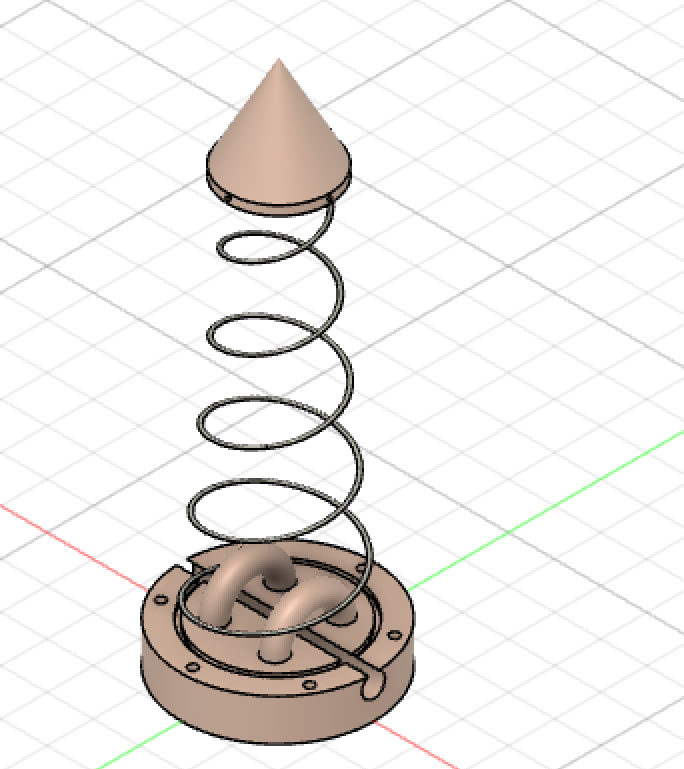
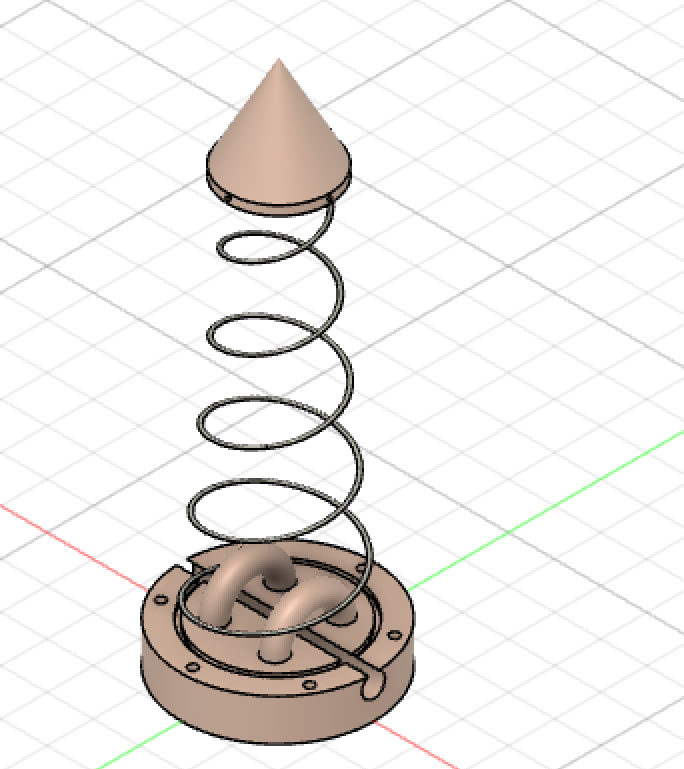
The tips were made such that the top of the spring nestled in snugly at the base, even though my first design had the spring fed through a fitted channel in the top piece. At the spike's base was a loop for the string to pass through (which could have been a bit smaller, in retrospect); this held up through all of my spring compression tests. At the bottom edge of the tip, I made several holes so I could sew on a sheath if wanted later on.
I initially wanted to incorporate rollers in the base loops to reduce friction of the system, but it proved challenging to create in Fusion 360. The base had two loops for the string to feed through, a channel for the bottom part of the spring to sit (not deep enough), as well as holes to sew through. Like the loop in the spike tip, I wish I had modelled it smaller, thus allowing for complete spike compression. Regardless, the bases were very sturdy and well-suited to this project.
Here are the files for the 3D printed components: Download my STL file

 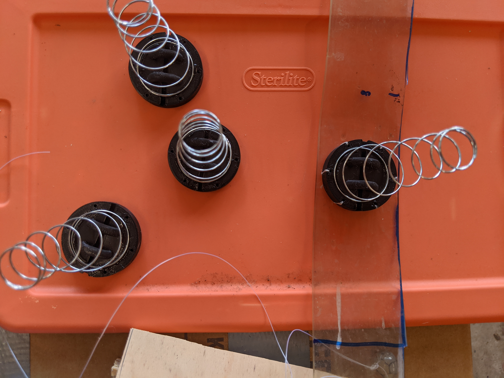
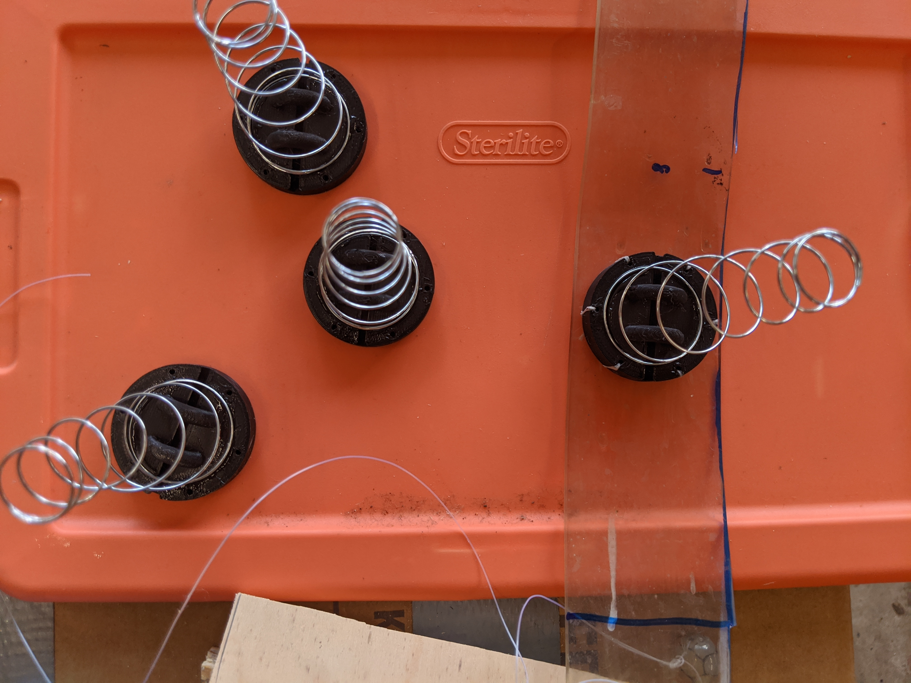
I began this project using two Huzzah32 boards, as I was so excited about the board-to-board direct communication facilitated by the ESP-NOW protocol. Here are the resources I found most helpful for ESP32 connection.
Stress can be measured by obtaining the galvanic skin response (see Wikipedia) with dermal electrodes. This phenomenon is the basis of the polygraph test (also known as the lie detector) and works by comparing the difference between two points on the skin, which vary in conductivity with sweat (an output of the stress response or general sympathetic tone).
According to the GSR sensor manufacturer seeed, the sensor must be calibrated by adjusting a screw on the board until the baseline serial reading is 512. Unfortunately, I found this impossible for the first and second sensors I bought.
I found that the reading is either 100-0, 2300+, or 1700/1800 initially and drifts randomly over time. I troubleshooted this by equating a signal (indicating a stress state) with a negative slope or comparison of binned y-values, but this did not work. Che-Wei Wang's GSR project was incredibly interesting, but he revealed that the interpretation of the sensor data would require Processing/p5* to compute.
I knew that signal processing with with a bandpass filter seemed inevitable and unnecessarily complicated, so I also tried to implement linear regression as a work around. Through iterative observation, I realized that a signal during the first 5-10 minutes or so of wearing the sensors could be any value less than 500 or 600, so I stuck with that as the physical fabrication required my time.
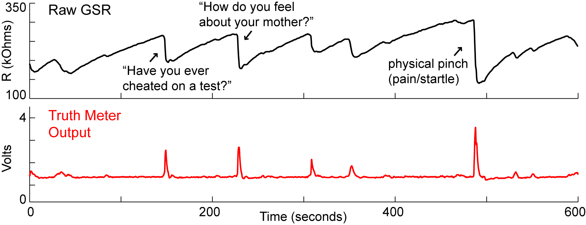The Truth Wristband kit and documentation has an excellent page about GSR as a lie detector that is work a look./
My code was compiled using the codes (1, 2) from the course website and inspired by the work of others GSR sensors (linked above).
Alternatively, this set is for the Adafruit HUZZAH ESP32 boards. First is the sender (connected to the sensor) and the second is the receiver.
I wanted to have both motors running simultaneously, but for safety reasons I staggered them. If I proceeded as initially planned, I would have consulted BlinkWithoutDelay or this helpful forum. The latter resource inspired me to have each motor run fewer steps per loop interchangably. Upon testing this, I found this to be least hazardous.
The process of making the Stress Collar took many proto-prototypes, but here's how I made it happen.
 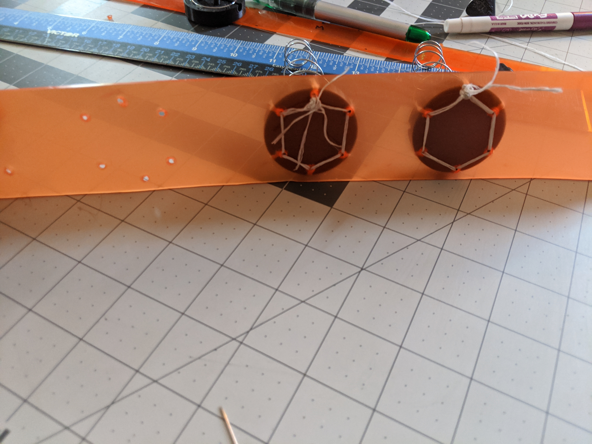
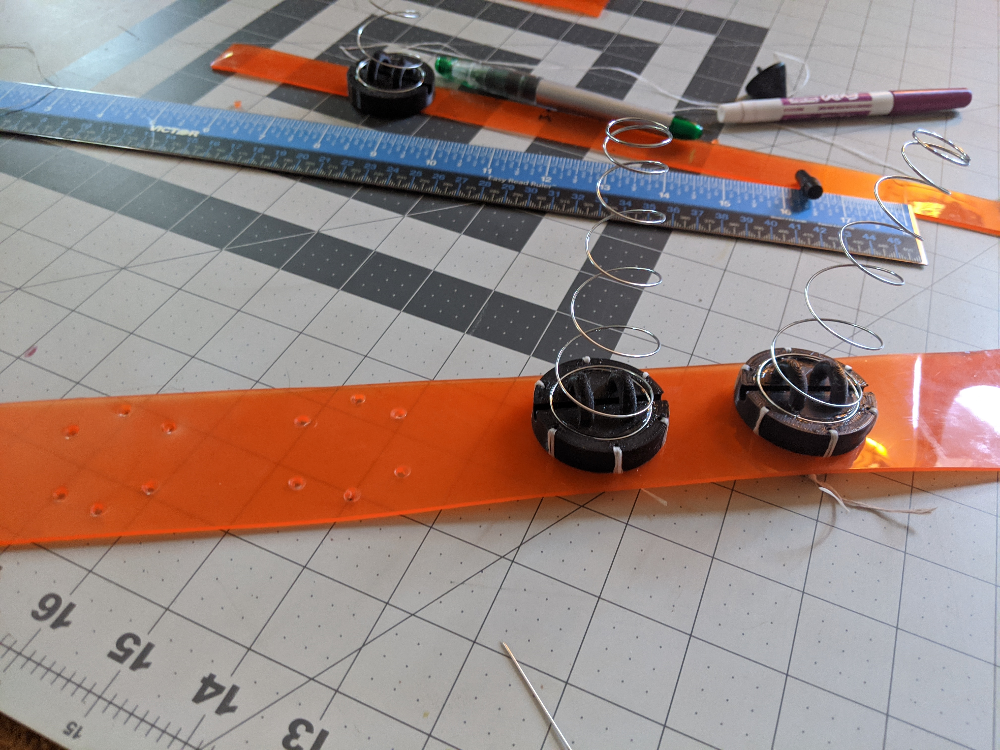
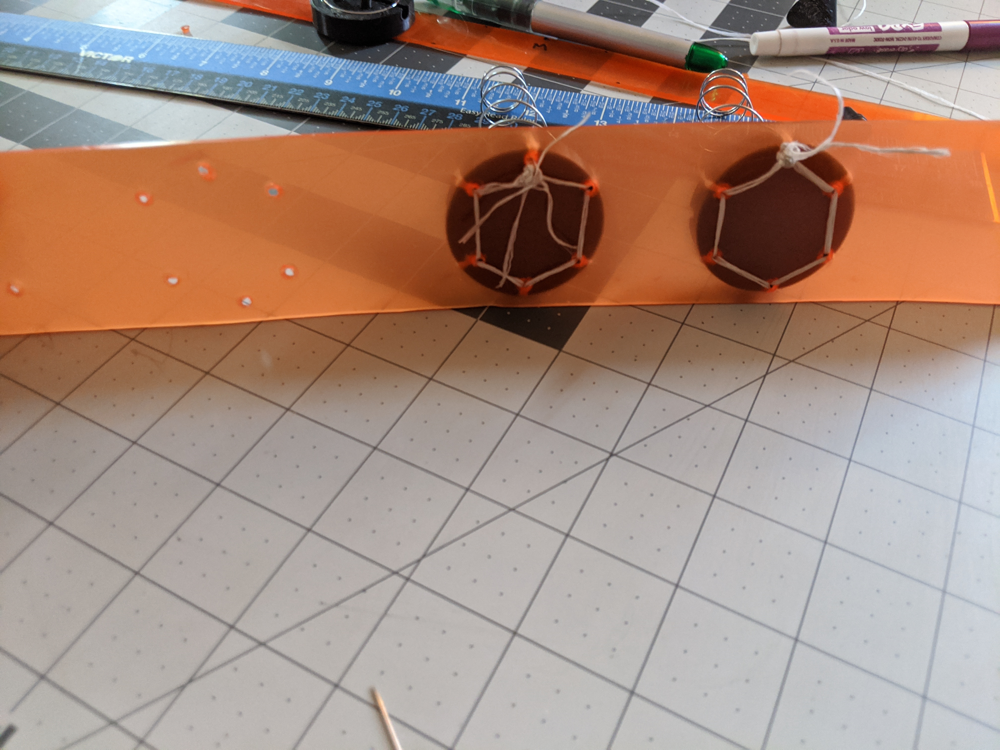
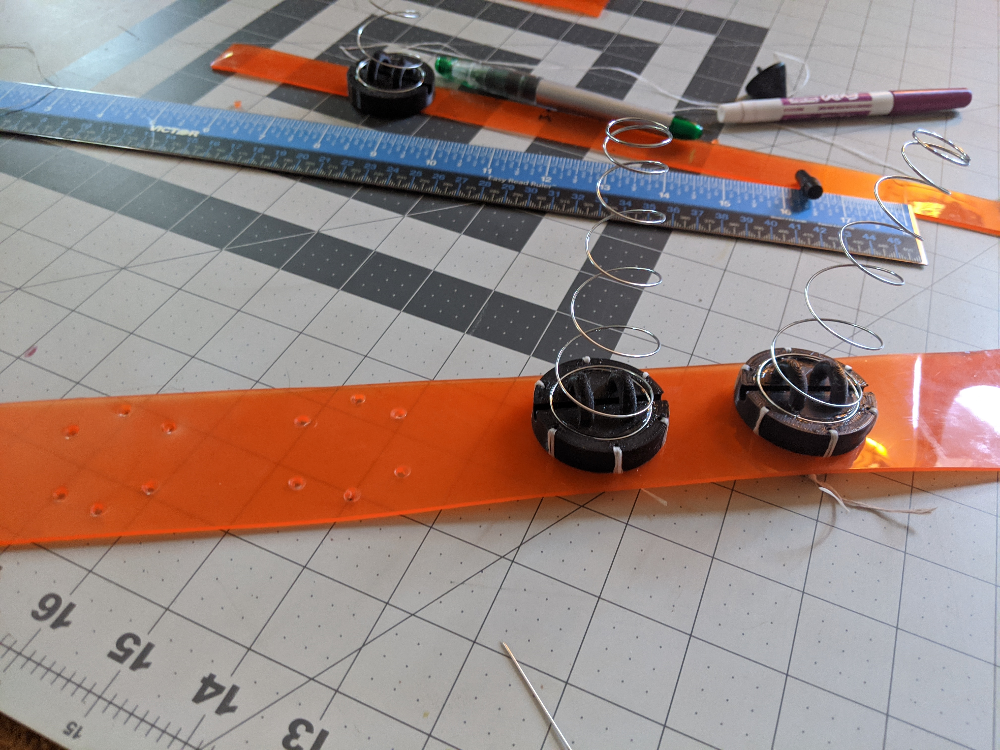

 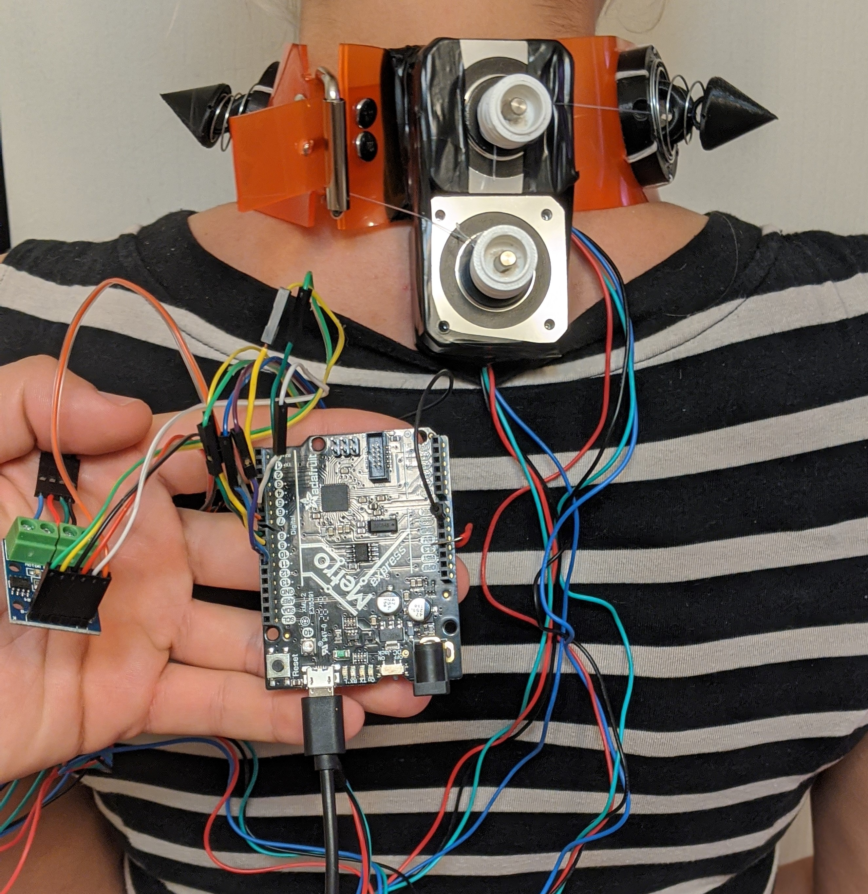
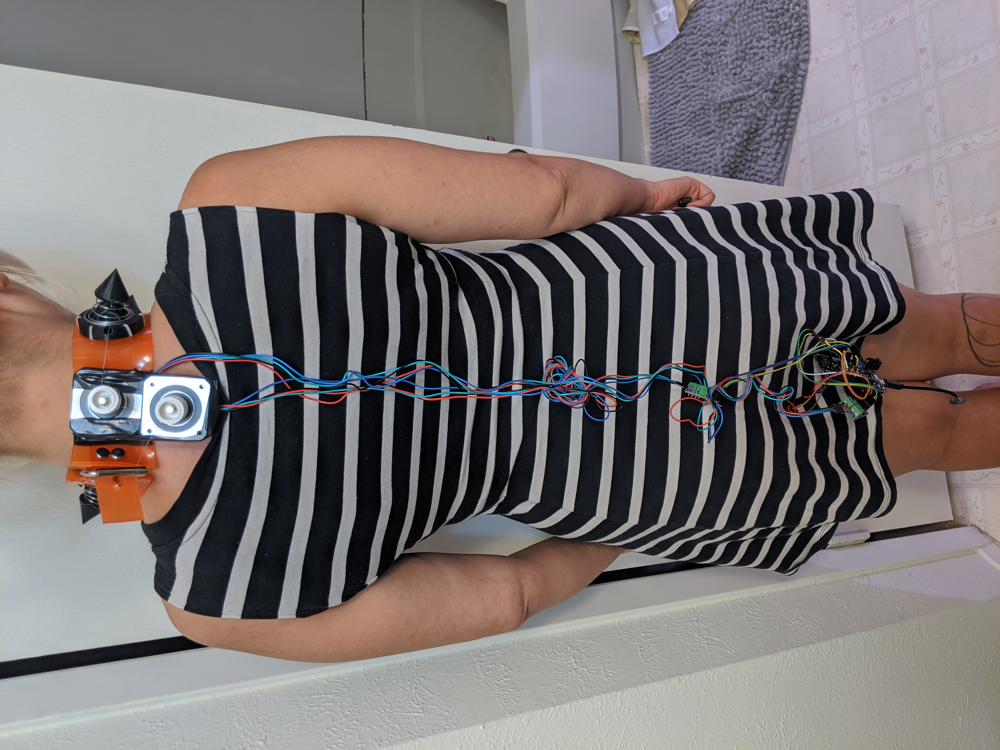
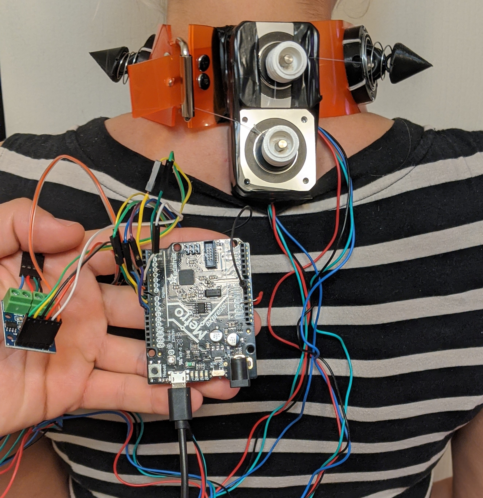
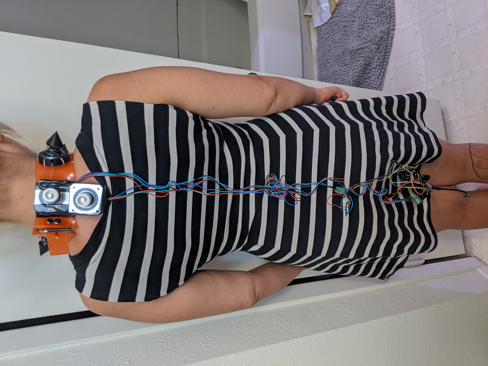
{kind=link}
{kind=link}